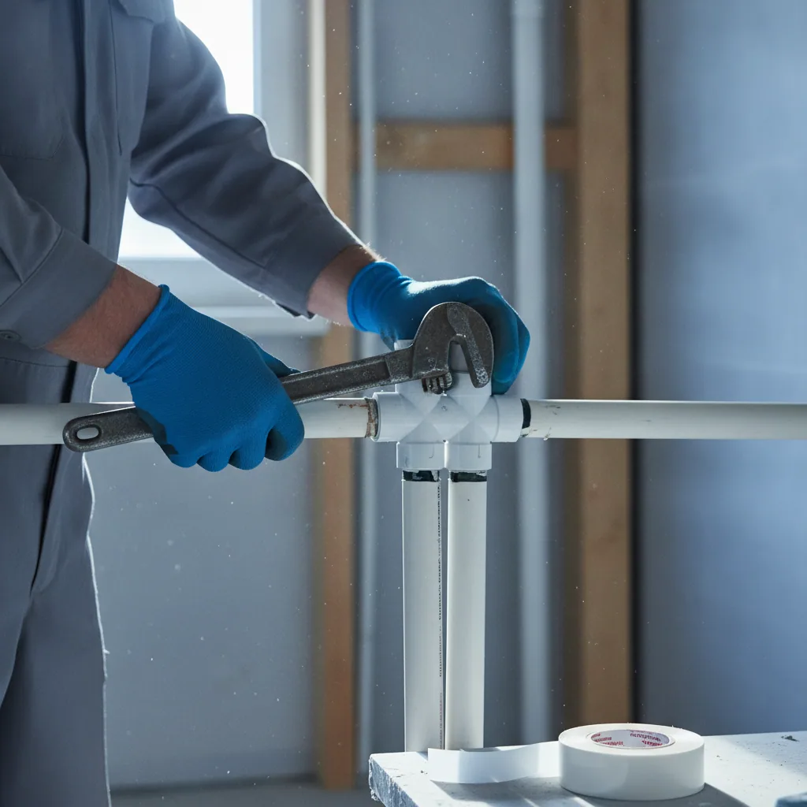
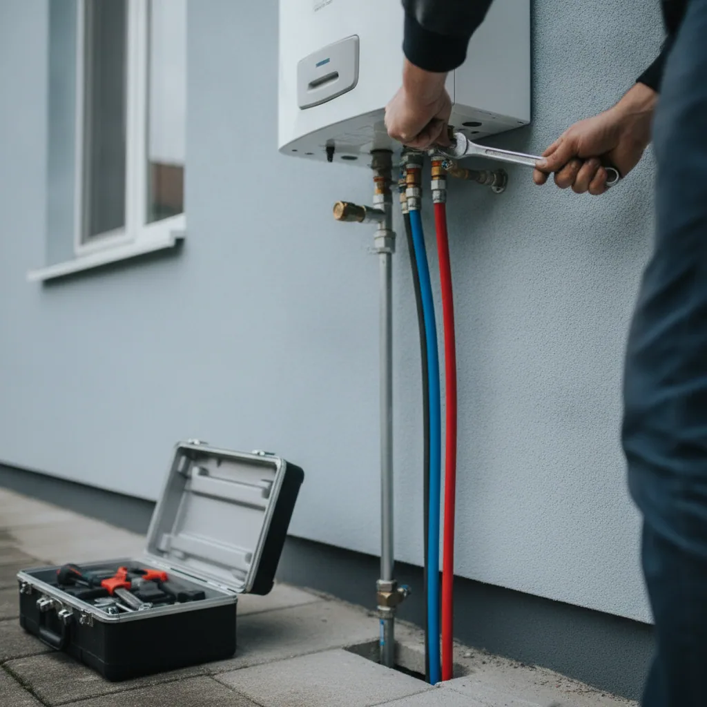
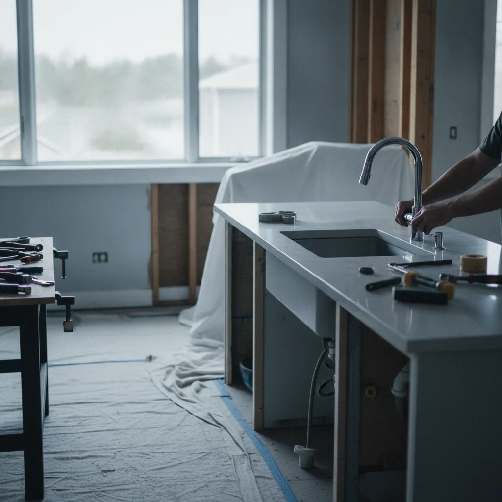
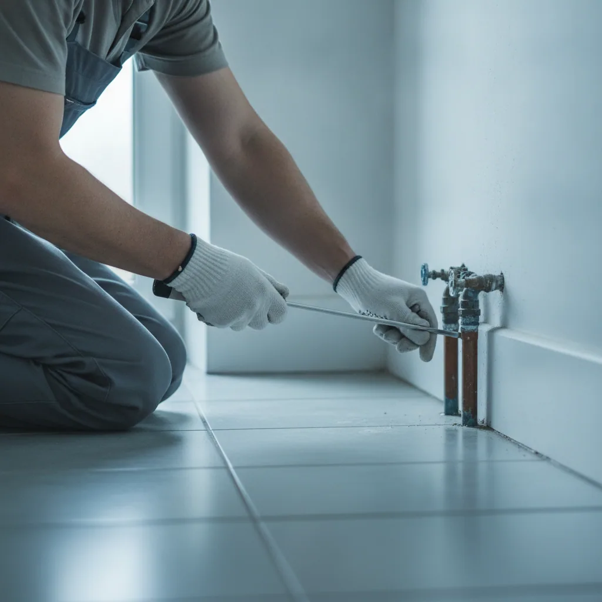
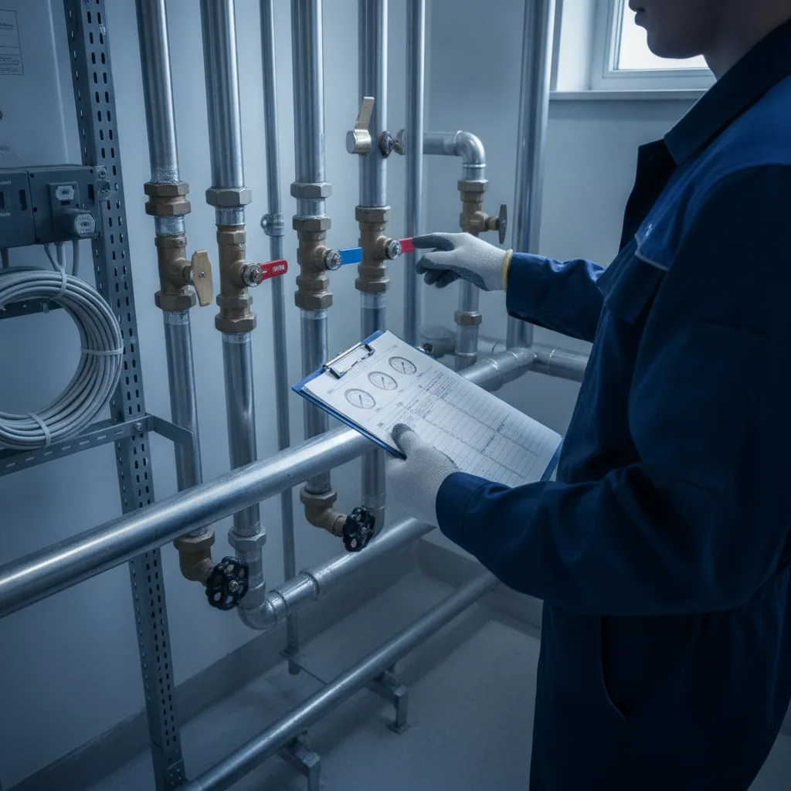

01
Water Supply Work
給排水設備工事
住宅や店舗、マンションなど、建物内の給水・排水管の新設工事をおこないます。 新築工事はもちろん、増改築にともなう配管の入れ替えにも対応いたします。
Service
水道工事に関わる仕事を、一気通貫でおこなっています。新設工事はもちろん、リフォームや突然のトラブル対応まで、 暮らしと建物のさまざまな「水」に関するお困りごとに対応いたします。

01
Water Supply Work
住宅や店舗、マンションなど、建物内の給水・排水管の新設工事をおこないます。 新築工事はもちろん、増改築にともなう配管の入れ替えにも対応いたします。

02
Hot Water Systems
給湯器・電気温水器の新規設置や入れ替え工事をおこないます。ご家庭用から業務用まで、 設置環境やご要望に合わせて最適な機器・工事方法をご提案いたします。

03
Renovation & Repair
キッチン・浴室・トイレ・洗面まわりのリフォームや、経年劣化による設備の修繕をおこないます。 水まわり配管の状態を確認しながら、必要な工事範囲をわかりやすくご説明いたします。

04
Leak Detection
「水道料金が急に上がった」「壁や床が湿っている」といった漏水トラブルの調査・修理に対応します。 原因箇所を特定したうえで、必要最小限の工事で早期の解決をめざします。

05
Maintenance
建物の給排水・給湯設備を長く安心してお使いいただけるよう、定期点検・メンテナンスにも対応しています。 トラブルの予防や、設備の寿命を延ばすためのご相談も承ります。